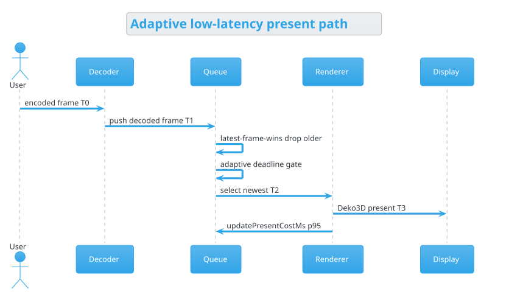

Overlay — Options¶
Live presentation and input controls while streaming. Most rows mirror Settings; changes apply without leaving the game.
{kind=link}

The sequence above is what Low latency pacing drives when enabled: decode → queue (latest-frame-wins + adaptive deadline) → Deko3D present, then feed render/GPU cost back into the gate.
Controls¶
Control |
Live? |
Same as Settings? |
Notes |
|---|---|---|---|
Input overlay |
Yes |
Helper only |
Extra on-stream input helper |
Mouse shortcut |
Yes |
Mouse input mode |
Hold time + button chord to open mouse mode |
Keyboard type / taps |
Yes |
Keyboard |
Same as Settings → Keyboard |
Pointer mode |
Yes |
Mouse / pointer |
Trackpad, absolute, multi-touch, disabled, … |
Controllers |
Yes |
Controller |
Pads, slots, rumble + motion tests |
Clipboard |
Yes |
Apollo-only |
Fetch / edit / upload / paste host clipboard |
Video rotation |
Yes |
Presentation |
Portrait virtual displays |
Scale mode |
Yes |
Video scale |
Fit / Fill / Stretch |
Low latency pacing |
Yes* |
Artemis Stream |
Adaptive deadline + latest-frame-wins (*queue rebuilds on next prepare) |
Full-range video |
Yes |
Artemis Stream |
Honored on NVTEGRA when forced |
Allow volume amplification |
Yes |
Stream |
Quick volume max 100% or 500% |
Remember Zoom & Pan |
Yes |
Presentation |
Persist zoom/pan between sessions |
Zoom / Pan X / Pan Y |
Yes |
Presentation |
Compact 84px sliders (1.0–4.0×, −1.0–1.0) |
Guide key |
Yes |
Guide |
Chord / system-button options |
Image Adjustments |
Yes |
Image |
Dithering, upscaling, mode, RCAS |
* Pacing mode is stored immediately; the frame queue path is selected when the decoder/holder is prepared (typically next stream or reconnect).
Low latency vs balanced¶
Mode |
Target buffer |
Present behavior |
|---|---|---|
Options pacing Off |
~1–2 frames |
Legacy occupancy / frame-credit |
Options pacing On |
0–1 frames |
Adaptive lead from render+GPU p95 + safety; drop to newest frame |
Credits for Options¶
Source |
Credit |
|---|---|
Base Options / image adjustment path |
|
Low-latency frame pacing algorithm inspiration |
|
derflacco/moonlight-android (Artemide) |
FSR Performance / Balanced / Quality preset idea (profiles) |
Apollo / Artemis Classic |
Clipboard and virtual-display-oriented live options |
See also
Quick · Performance · Credits